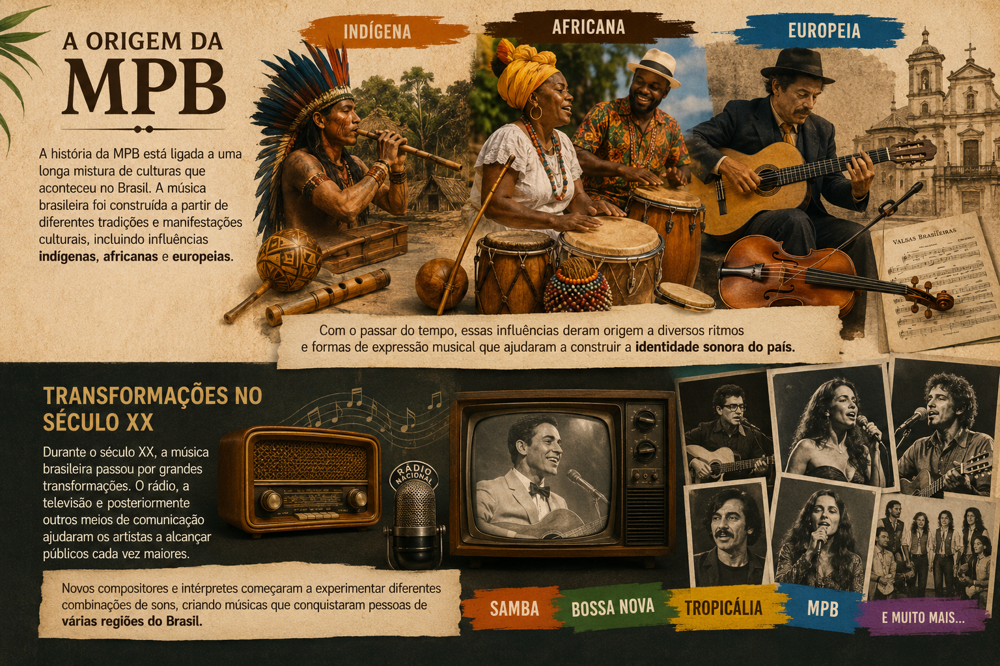
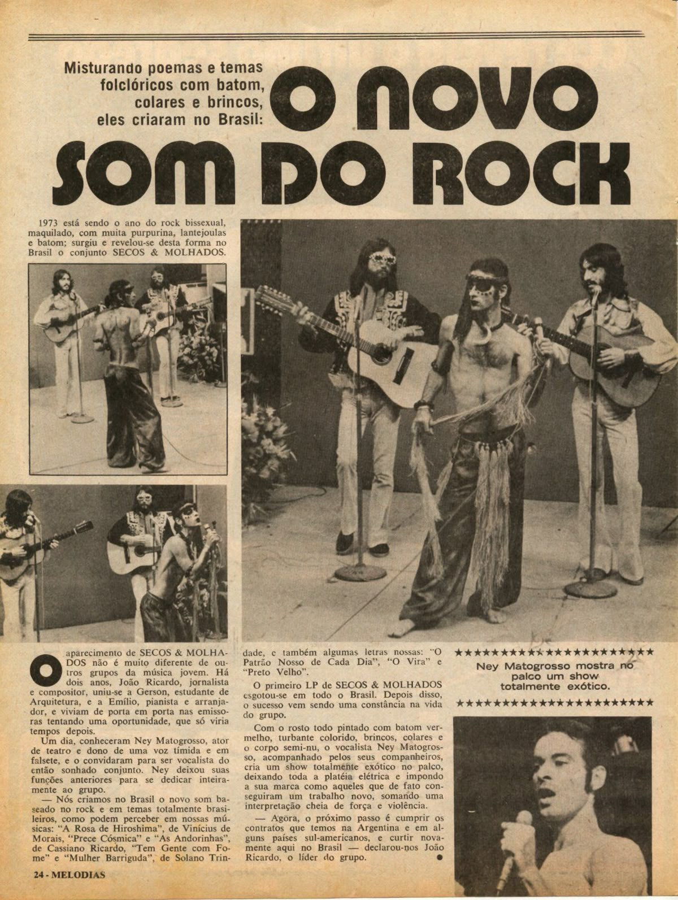
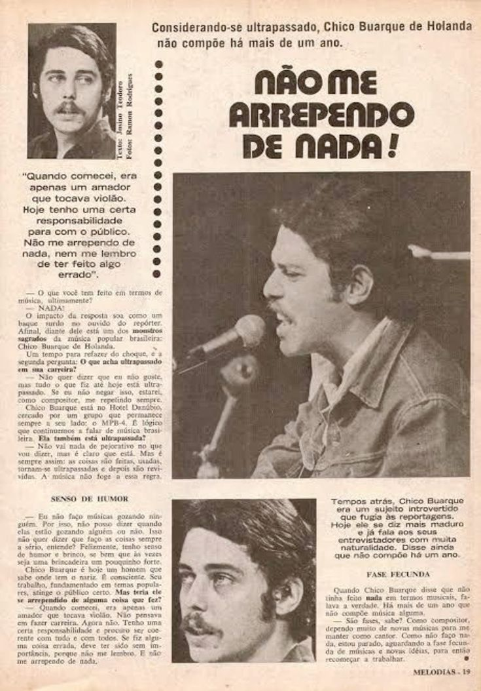
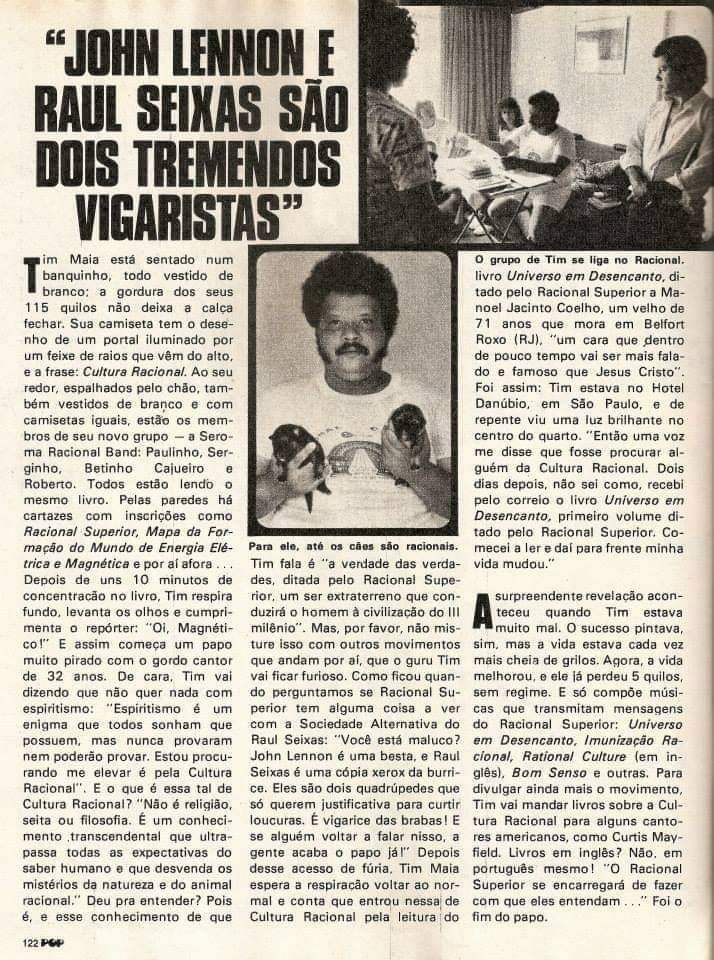
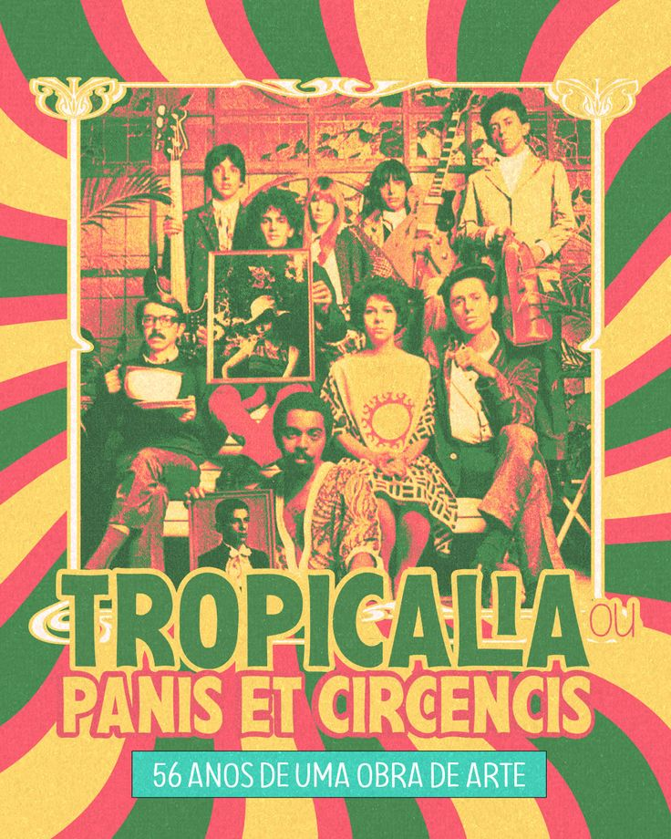
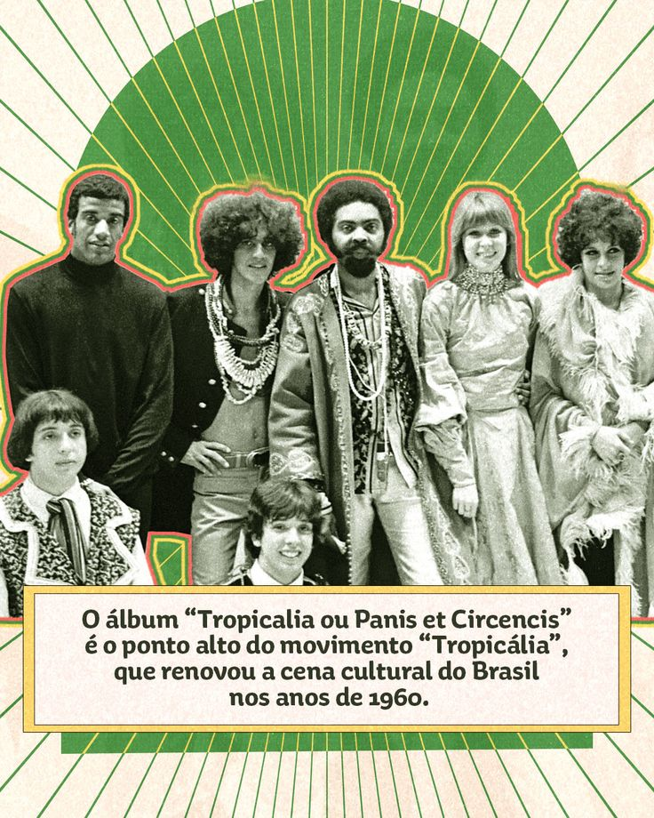
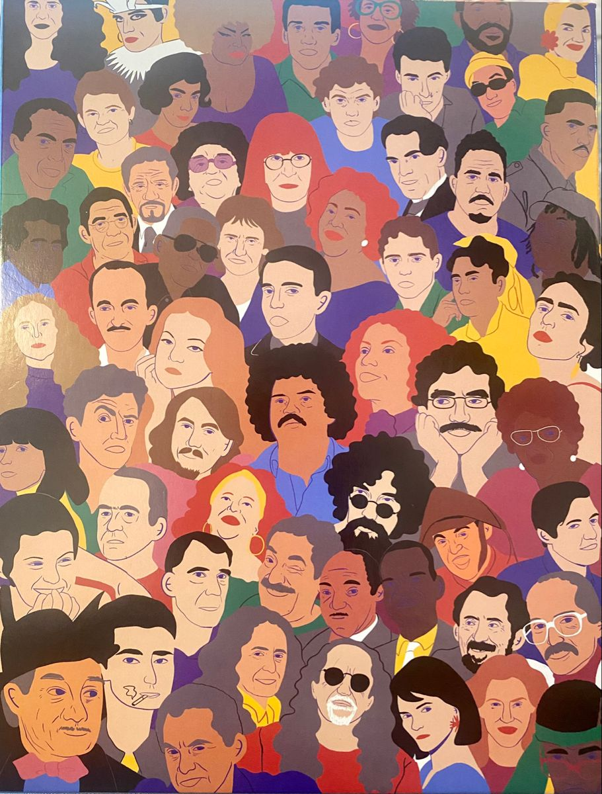
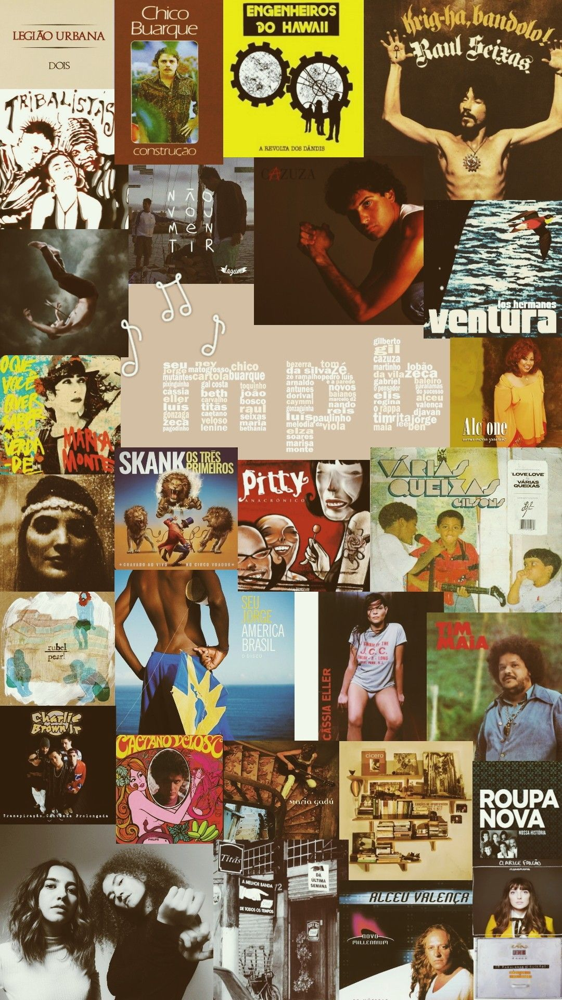

A Música Popular Brasileira, conhecida pela sigla MPB, é um dos principais símbolos da diversidade cultural do Brasil. Ela reúne diferentes ritmos, sons, instrumentos e influências que foram se encontrando ao longo da história. A MPB não possui apenas uma forma de fazer música, pois seus artistas exploram diferentes estilos e maneiras de expressar sentimentos, histórias e acontecimentos da sociedade brasileira.
Ao longo dos anos, a MPB passou por diversas transformações e recebeu influências do samba, da bossa nova, do choro, da música regional, do rock e de outros estilos. Essa mistura fez com que a música brasileira se tornasse cada vez mais rica e criativa. Por meio das canções, muitos artistas conseguiram contar histórias do cotidiano, falar sobre sentimentos e representar diferentes momentos da vida brasileira.

A história da MPB está ligada a uma longa mistura de culturas que aconteceu no Brasil. A música brasileira foi construída a partir de diferentes tradições e manifestações culturais, incluindo influências indígenas, africanas e europeias. Com o passar do tempo, essas influências deram origem a diversos ritmos e formas de expressão musical que ajudaram a construir a identidade sonora do país.
Durante o século XX, a música brasileira passou por grandes transformações. O rádio, a televisão e posteriormente outros meios de comunicação ajudaram os artistas a alcançar públicos cada vez maiores. Novos compositores e intérpretes começaram a experimentar diferentes combinações de sons, criando músicas que conquistaram pessoas de várias regiões do Brasil.

A década de 1960 foi um período muito importante para a música brasileira. A televisão começou a transmitir festivais de música, que se tornaram grandes acontecimentos culturais. Nesses festivais, novos artistas e compositores ganharam destaque e apresentaram músicas que rapidamente ficaram conhecidas pelo público.
Nesse período, a música também passou a ser utilizada por muitos artistas como uma forma de expressar opiniões, sentimentos e questionamentos sobre o momento vivido pelo país. As canções passaram a ter grande importância cultural e ajudaram a aproximar a música dos acontecimentos sociais e políticos daquela época.



No final dos anos 1960 surgiu a Tropicália, um movimento cultural que provocou uma verdadeira transformação na música brasileira. Os artistas tropicalistas começaram a misturar elementos da música nacional com influências internacionais, como o rock, criando uma sonoridade diferente e inovadora para aquele período.
Entre os nomes mais conhecidos desse movimento estão Caetano Veloso e Gilberto Gil. A Tropicália também esteve relacionada às artes visuais, ao teatro e à poesia, tornando-se muito mais do que apenas um movimento musical. Sua influência continuou presente na cultura brasileira mesmo depois do fim do período mais intenso do movimento.


Com o passar das décadas, a MPB continuou mudando e incorporando novos elementos. Durante os anos 1970, 1980 e 1990, diferentes artistas apresentaram novas formas de composição e interpretação. Alguns mantiveram características tradicionais da música brasileira, enquanto outros buscaram experimentar novos instrumentos, ritmos e tecnologias.
Essa capacidade de se transformar fez com que a MPB permanecesse presente na vida de diferentes gerações. Cada período trouxe novos artistas, novas ideias e novas músicas, mostrando que a cultura brasileira está sempre em movimento. Assim, a MPB conseguiu preservar parte de sua história sem deixar de abrir espaço para novidades.

Atualmente, a música brasileira continua sendo marcada pela mistura de estilos. Novos artistas utilizam elementos da MPB junto com gêneros como pop, rap, samba, reggae, música eletrônica e outros ritmos. A internet e as plataformas digitais também facilitaram o acesso do público a diferentes artistas e permitiram que novas vozes alcançassem pessoas dentro e fora do Brasil.
Mesmo com todas essas mudanças, a MPB continua carregando a história, a criatividade e a diversidade da cultura brasileira. Ela permanece como um espaço para contar histórias, expressar sentimentos e apresentar diferentes formas de enxergar o Brasil. Dessa maneira, a MPB continua escrevendo novos capítulos de sua história, enquanto mantém viva a memória das gerações que ajudaram a construí-la.
